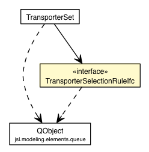

jsl.modeling.elements.spatial.transporter
Interface TransporterSelectionRuleIfc

public interface TransporterSelectionRuleIfc
selectTransporter
Transporter selectTransporter(List<Transporter> list,
QObject request)
- Returns a reference to the next Transporter to be selected
from the supplied list. The transporter is not removed from the list.
- Parameters:
list - The list to be peeked intorequest - The request that needs a transporter
- Returns:
- The FreePathTransporter2D that is next, or null if the list is empty
addIdleTransporter
void addIdleTransporter(List<Transporter> list,
Transporter transporter)
Copyright © 2012 Manuel D. Rossetti. All Rights Reserved.